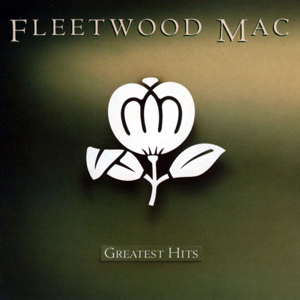

Greatest Hits
Fleetwood Mac
Upgrade idea: This reissue is a solid listen. For the ultimate Fleetwood Mac compilation experience, individual album purchases (particularly Rumours on MoFi SACD CMOB 2311 SA) will outperform any compilation pressing.
- Original release
- 1988
- Country
- US
- Format
- Vinyl LP, Compilation, Reissue (GZ Media Pressing)
- Label / Cat#
- Warner Records – R1 25801 / Warner Records – 081227959357
- Genres
- Rock, Pop
- Styles
- Pop Rock
- Discogs release
- 23273714
- Discogs master
- 119888
- Apple Music
- Greatest Hits
- Wikipedia
- Greatest Hits
Production notes
Tracklist (Discogs)
| A1 | Rhiannon | 4:12 |
| A2 | Don't Stop | 3:12 |
| A3 | Go Your Own Way | 3:36 |
| A4 | Hold Me | 3:45 |
| A5 | Everywhere | 3:42 |
| A6 | Gypsy | 4:25 |
| A7 | As Long As You Follow | 4:08 |
| B1 | Say You Love Me | 4:11 |
| B2 | Dreams | 4:16 |
| B3 | Little Lies | 3:39 |
| B4 | Sara | 6:26 |
| B5 | Tusk | 3:36 |
| B6 | No Questions Asked | 4:41 |
Tracklist (Apple Music)
| 1 | Rhiannon | 4:12 |
| 2 | Don't Stop | 3:10 |
| 3 | Go Your Own Way | 3:38 |
| 4 | Hold Me | 3:45 |
| 5 | Everywhere | 3:42 |
| 6 | Gypsy | 4:24 |
| 7 | You Make Loving Fun | 3:31 |
| 8 | As Long As You Follow | 4:18 |
| 9 | Dreams | 4:14 |
| 10 | Say You Love Me | 4:09 |
| 11 | Tusk | 3:30 |
| 12 | Little Lies | 3:38 |
| 13 | Sara | 6:22 |
| 14 | Big Love | 3:38 |
| 15 | Over My Head | 3:34 |
| 16 | No Questions Asked | 4:40 |
Personnel & credits
- Fleetwood Mac — Art Direction
- John Courage — Coordinator [Studio]
- Michael Randolph Reed — Crew [Studio Crew]
- Tim McCarthy — Crew [Studio Crew]
- Larry Vigon Studio — Design
- Dennis Dunstan — Design Concept [Cover Concept]
- Greg Ladanyi — Engineer
- Greg Droman — Engineer [Additional]
- Duane Seykora — Engineer [Assistant]
- Stephen Davis (3) — Liner Notes
- Stephen Marcussen — Mastered By
- Herbert Wheeler Worthington III — Photography By [Back Cover]
- Eastern Light Photography — Photography By [Sleeve Photos]
- Herbert Wheeler Worthington III — Photography By [Sleeve Photos]
- Neal Preston — Photography By [Sleeve Photos]
- Norman Seeff — Photography By [Sleeve Photos]
- Sam Emerson — Photography By [Sleeve Photos]
- Fleetwood Mac — Producer
- Greg Ladanyi — Producer
- Keith Olsen — Producer
- Lindsey Buckingham — Producer
- Ken Caillat — Producer [Additional]
- Richard Dashut — Producer [Additional]
- Dan Garfield — Programmed By [Keyboards]
- Ray Lindsey — Technician [Guitar Doctor]
Identifiers
- Barcode: 081227959357 (Scanned)
- Barcode: 0 81227 95935 7 (Printed)
- Matrix / Runout: 10205 6A 0081227959357 [224064E1] EXP [1145902] (Side A etched [stamped], variant 1)
- Matrix / Runout: 10205 5A 0081227959357 [224064E2] EXP [943328] (Side B etched [stamped], variant 1)
- Matrix / Runout: EXP [1497033] 10205 6A 0081227959357 [224064E1] (Side A etched [stamped], variant 2)
- Matrix / Runout: EXP 10205 5B 0081227959357 [1485060 224064E2] (Side B etched [stamped], variant 2)
Notes
Sticker on shrink-wrap reads:
"8X Platinum Collection
13 Tracks Of Classic Fleetwood Mac
-Including-
Go Your Own Way
Don't Stop • Gypsy
Rhiannon • Dreams
Little Lies
R1 25801 / 08122795935"
Cover Spine Label reads "R1 25801 / 08122795935"
On back cover (bottom centered):
"Warner Records Inc., a Warner Music Group Company. 777 S. Santa Fe Ave., Los Angeles, CA 90021. © 1988 Warner Records, Inc. ℗ 1975, 1977, 1979, 1982, 1987, 1988 Warner Records, Inc.
All Rights Reserved. Manufactured for & Marketed by Warner Music Group. Unauthorized duplication is a violation of applicable laws. Made in Canada. R1 25801/081227959357"
Notes & discrepancies
- Track count differs: Discogs=13, Apple Music=16
- Total runtime differs by 636s (Discogs=3229s, Apple Music=3865s) — likely a different master/remaster.
Greatest Hits is Fleetwood Mac’s 1988 compilation on Warner Bros. Records, covering the band’s commercial peak from 1975 through 1988 — the Buckingham/Nicks era that transformed them from a British blues band into one of the best-selling acts in history. The compilation draws from Fleetwood Mac (1975), Rumours (1977), Tusk (1979), Mirage (1982), and Tango in the Night (1987), making it an ideal single-disc survey of the band’s pop-rock dominance. Tracks like “Go Your Own Way,” “Dreams,” “The Chain,” “Little Lies,” “Everywhere,” and “Big Love” represent some of the most enduring radio staples of the era.
The compilation arrived as the band was fragmenting again — Lindsey Buckingham had just departed — and serves as both a commercial summary and an inadvertent farewell to the classic lineup. It became one of the best-selling compilations of its era, introducing Rumours-era material to a new generation of listeners in the late 1980s.
This 2020 US reissue is a contemporary vinyl pressing of the 1988 compilation, catalog R1 25801 / barcode 081227959357. The matrix codes
10205 6A 0081227959357 [224064E1] EXPidentify this as an EXP (Erika Records / Record Industry) pressing — a European pressing plant that handles many US major-label reissues. Standard weight vinyl with updated reissue packaging.About this 2020 US pressing (Vinyl, LP, Compilation, Reissue): Warner Bros. / Rhino catalog R1 25801, 2020 reissue of the 1988 compilation. Matrix 10205 / 0081227959357 / 224064E1, pressed by EXP (Record Industry).